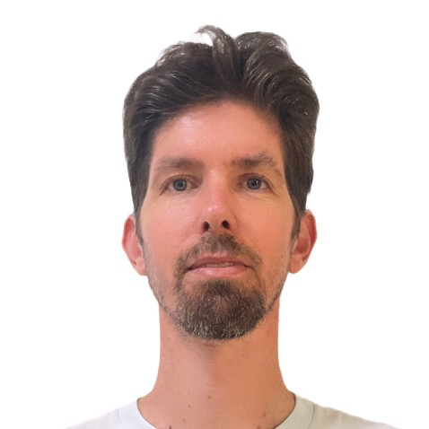

Physics Education Researcher & Educator
物理教育研究者・物理教師
Kagoshima, Japan

I'm a physics educator, science education researcher, and an avid Maker. What drives me is understanding what interests and motivates students, and making learning personally meaningful to them.
I build curriculum and lab activities around authentic, making-based learning. I hold a Ph.D. in Science Education from the Technion – Israel Institute of Technology, where I remain affiliated with a research group, and spent over a decade teaching high school physics. I currently live in rural Kagoshima, Japan, with my wife and two daughters.
私は物理教育者であり、科学教育研究者、そして熱心なメイカーです。私を突き動かしているのは、生徒が興味を持ち、意欲を感じることを理解し、学びを彼らにとって個人的に意味のあるものにすることです。
本物の学問的関与とメイキング(ものづくり)型学習を軸に、カリキュラムと実験活動を開発しています。テクニオン(イスラエル工科大学)にて理科教育学の博士号を取得し、現在も同大学の研究グループに所属しています。10年以上にわたり高校で物理を教えました。現在は、鹿児島県の田舎で妻と二人の娘と暮らしています。
“Characterizing Meaningful Engagement in a Physics-Based Making Project.”「Characterizing Meaningful Engagement in a Physics-Based Making Project」